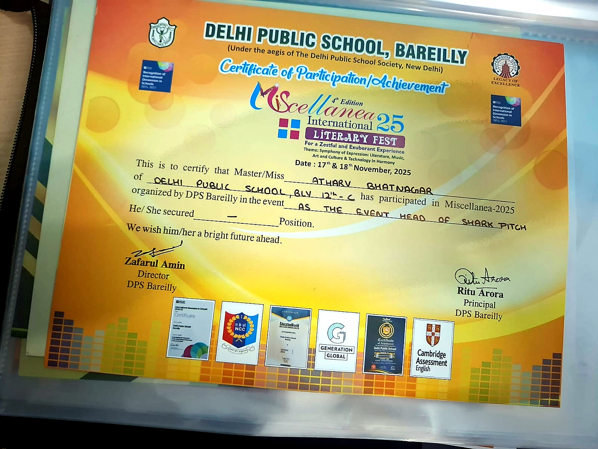
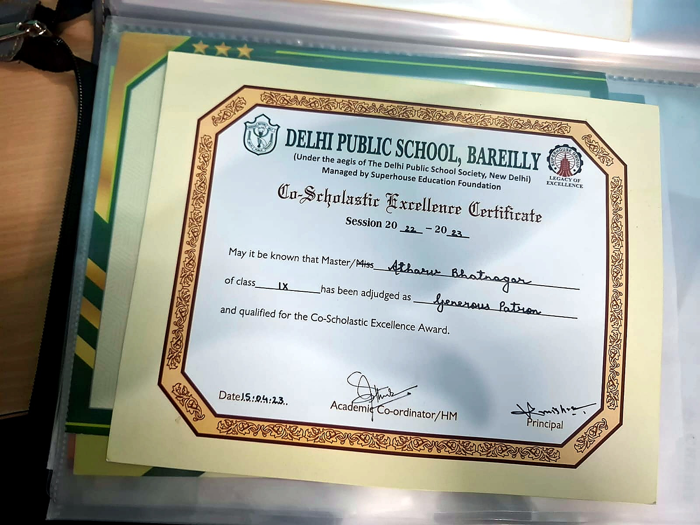
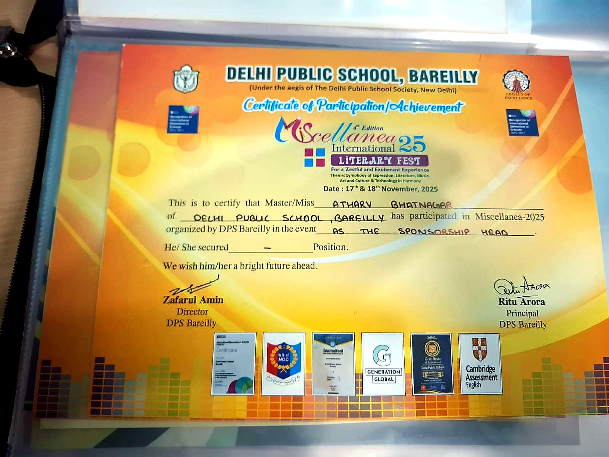
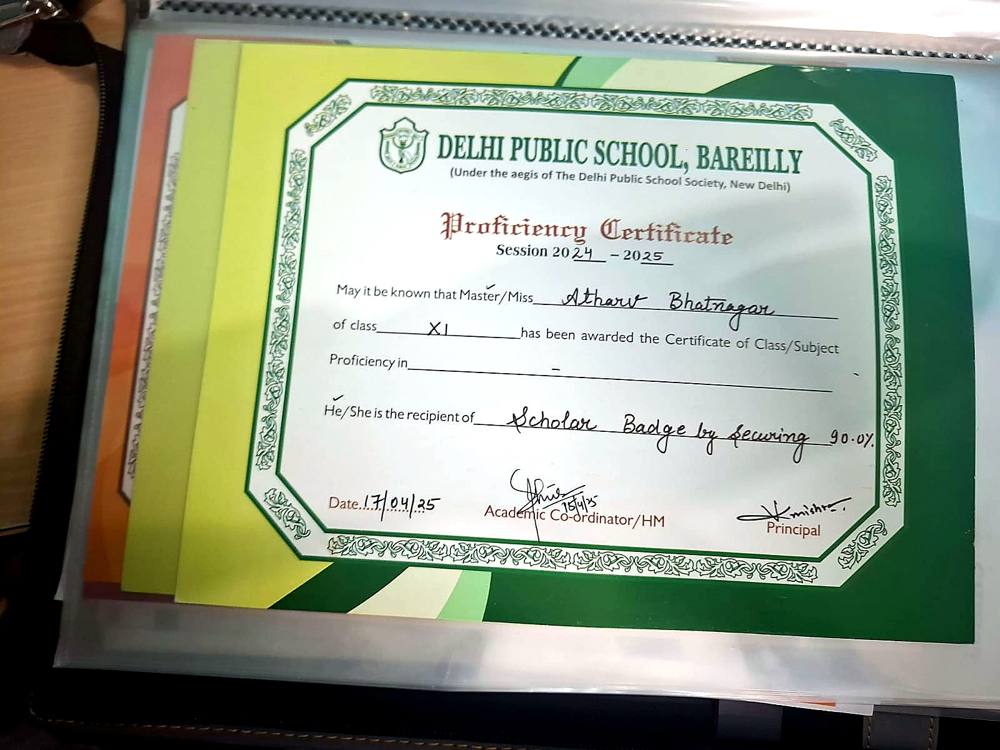
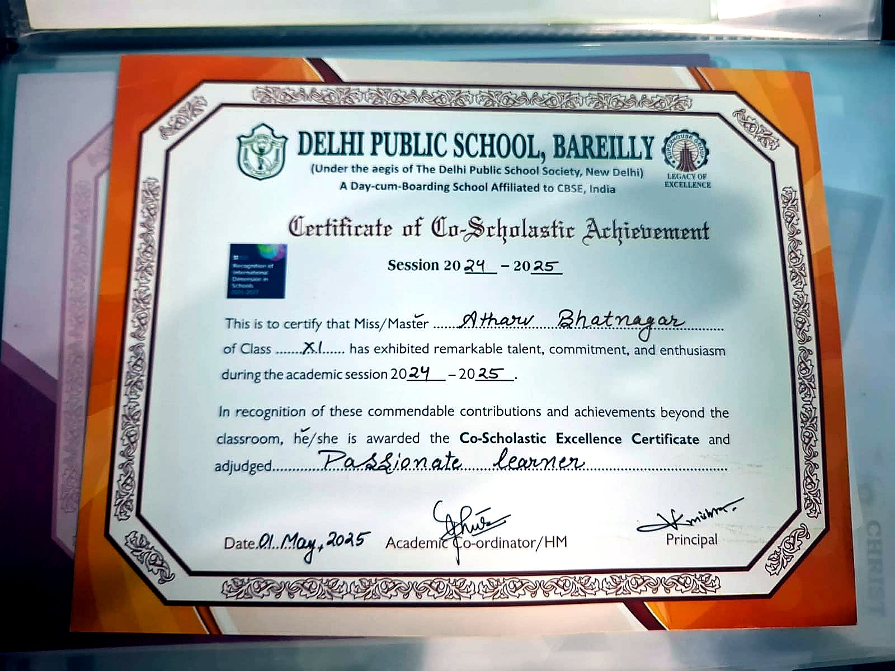
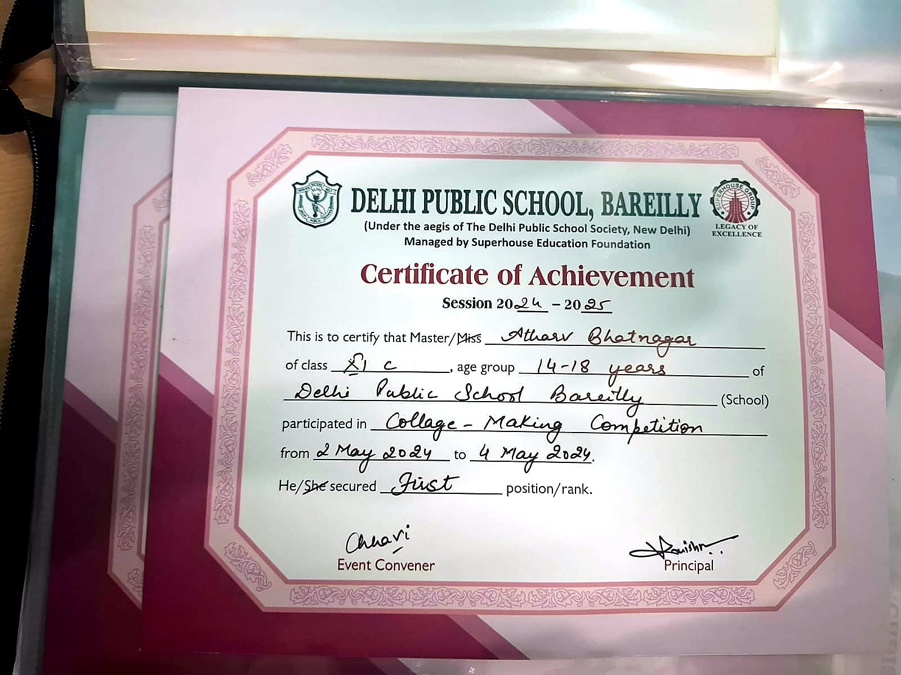
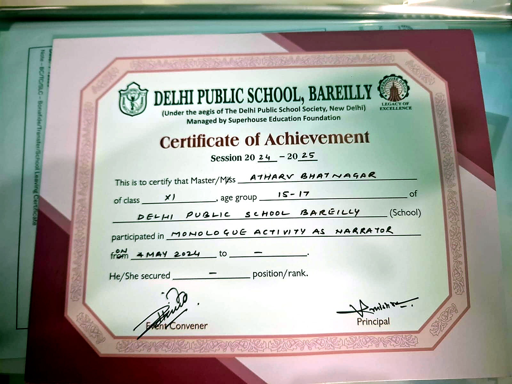
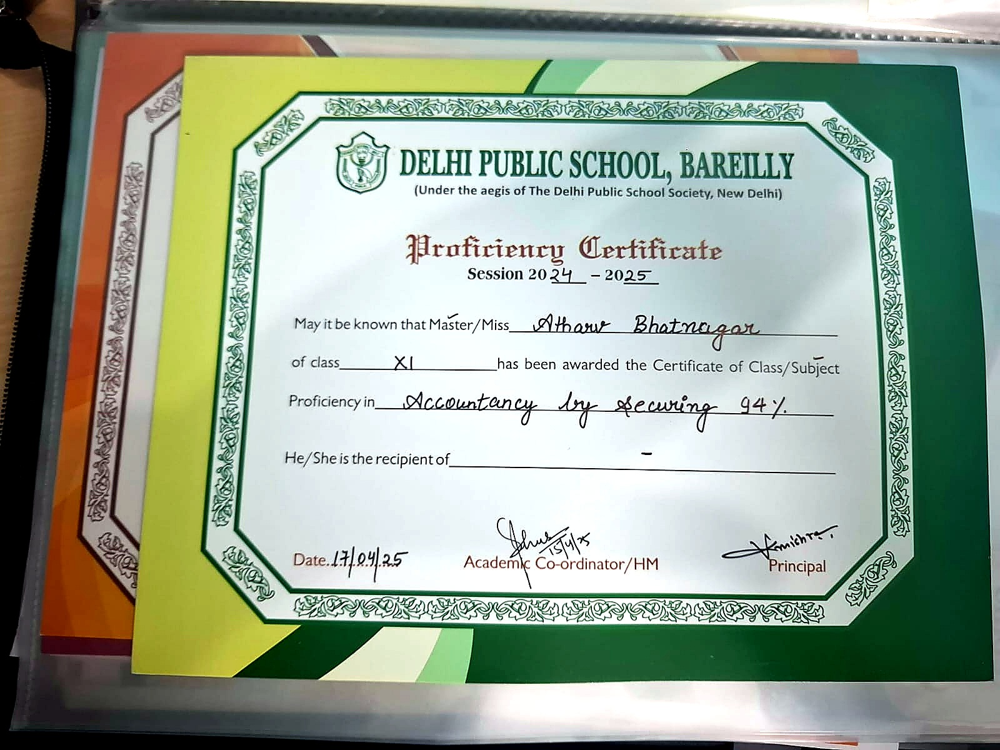
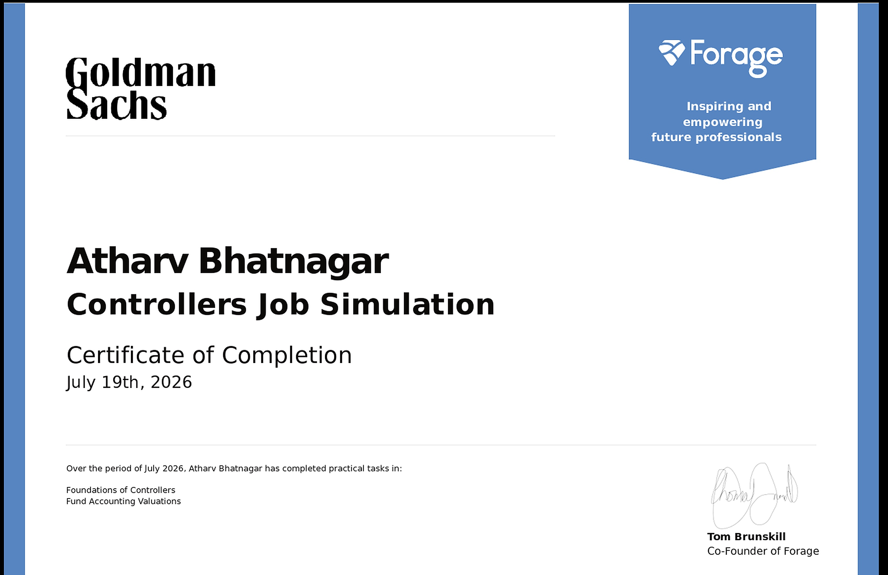

01
STUDENT LEADERSHIP
House Captain
Represented and supported fellow students, encouraging participation, teamwork and a positive house environment.
Hello, I'm
A motivated student with a strong interest in leadership, collaboration and bringing people together to turn ideas into action.
01 / A LITTLE ABOUT ME
I'm Atharv, a student who enjoys taking initiative, working with teams and contributing to events and communities. Through student leadership roles and school activities, I've developed experience in coordination, communication, responsibility and organising people around a shared goal.
02 / ROLES & RESPONSIBILITIES
A few roles and responsibilities that have shaped the way I work with people.
STUDENT LEADERSHIP
Represented and supported fellow students, encouraging participation, teamwork and a positive house environment.
ENTREPRENEURSHIP
Led a student club focused on entrepreneurial thinking, initiative and bringing ideas to life.
PUBLIC AFFAIRS & DEBATE
Handled the club's treasurer responsibilities and contributed to its planning and coordination.
EVENT MANAGEMENT
Led finance and sponsorship efforts across several school events, supporting event planning and resource coordination.
03 / THINGS I'VE EARNED
Each achievement is displayed individually. Select any certificate to view the full image.

Leadership & event management
Open full certificate ↗
Class IX · 2022–23
Open full certificate ↗
Literary Fest · November 2025
Open full certificate ↗
Class XI · 90%
Open full certificate ↗
Class XI · 2024–25
Open full certificate ↗
2–4 May 2024
Open full certificate ↗
Class XI · 2024
Open full certificate ↗
Class XI · 94%
Open full certificate ↗
Forage · Certificate of Completion · 19 July 2026
Open full certificate ↗04 / WHERE I STUDIED
IIM Bangalore · BBA (DBE)
School education · Class X and Class XII
05 / WHERE I'M HEADED
INDIAN INSTITUTE OF MANAGEMENT BANGALORE
Building a stronger foundation in business, leadership and problem-solving while continuing to grow through new experiences.
06 / SAY HELLO
For opportunities, collaborations or a simple conversation, feel free to reach out.